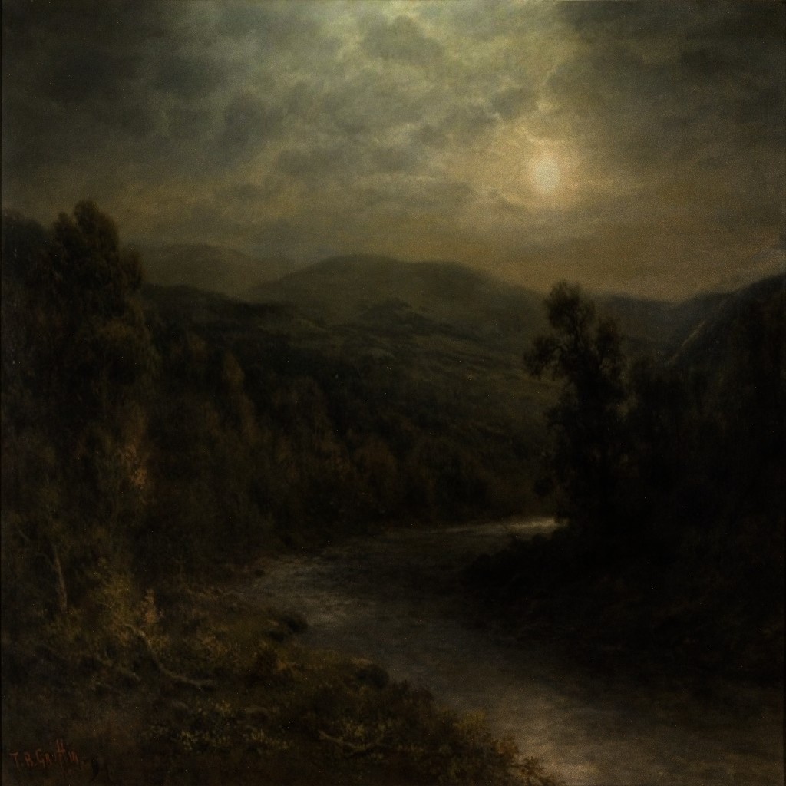

<!DOCTYPE html>
<html>
    <head>
        <script src="src/js/aframe.0.7.0.min.js"></script>
        <script src="src/js/aframe-extras.min.js"></script>

        <script src="src/js/lzma.js"></script>
        <script src="src/js/ctm.js"></script>
        <script src="src/js/CTMLoader.js"></script>

        <!--传送控件，用于在手机上对相机位置进行帧传送-->
        <script src="src/js/aframe-teleport-controls.min.js"></script>

        <script src="src/js/ctm_component.js"></script>
        <script src="src/js/mobile_component.js"></script>
    </head>
</html>

<body>
    <a-scene>
        <!--a-entity表示一个实体，实体是占位符对象以便我们插入组件来提供其外观、行为和功能。-->
        <!--这里的mobile是我们自己定义的组件，用于在手机上控制位置的移动-->
        <a-entity mobile></a-entity>

        <!--添加光照，平行光和ambient环境光-->
        <a-entity light="type: directional; color: #FFF; intensity: 0.5" position="2 20 0"></a-entity>
        <a-entity light="type: ambient; color: #FFF"></a-entity>
  
        <!--定义一些资源，像模型，图片，声音-->
        <a-assets>
            <!--mixin是相当于一个其它primitive可以吸收的属性把-->
            <a-mixin id="checkpoint"></a-mixin>
            <a-mixin id="checkpoint-hovered" color="#FFC0CB"></a-mixin>

            <!--天空盒图片-->
            

            <!--背景音乐-->
            <a-sound src="assets/audio/fire.ogg"
                     audioplay="true"
                     loop="true"
                     position="1 1 0"></a-sound>


            <!-- acropolis -->
            <a-asset-item id="acropolis-obj" src="assets/models/acropolis.obj"></a-asset-item>
            
            <!-- - acropolis -->

            <!-- castle_lake -->
            <a-asset-item id="castle_lake-obj" src="assets/models/castle_lake.obj"></a-asset-item>
            
            <!-- - castle_lake -->

            <!-- good_samaritan -->
            <a-asset-item id="good_samaritan-obj" src="assets/models/good_samaritan.obj"></a-asset-item>
            
            <!-- - good_samaritan -->

            <!-- moonlight -->
            <a-asset-item id="moonlight-obj" src="assets/models/moonlight.obj"></a-asset-item>
            
            <!-- - moonlight -->

            <a-asset-item id="room" src="assets/models/conference_room1/scene.gltf"></a-asset-item>

            <a-asset-item id="pedestal" src="assets/models/pedestal/scene.gltf"></a-asset-item>
            
            <a-asset-item id="wall_lamp" src="assets/models/exterior_wall_lamp/scene.gltf"></a-asset-item>

            <a-asset-item id="sculture1" src="assets/models/h5/scene.gltf"></a-asset-item>
            
            <a-asset-item id="sculture2" src="assets/models/3/scene.gltf"></a-asset-item>
            
            <a-asset-item id="sculture3" src="assets/models/12/scene.gltf"></a-asset-item>
            
            <a-asset-item id="sculture4" src="assets/models/10/scene.gltf"></a-asset-item>
            
            <a-asset-item id="sculture5" src="assets/models/2/scene.gltf"></a-asset-item>
           
            <a-asset-item id="sculture6" src="assets/models/4/scene.gltf"></a-asset-item>

            <a-asset-item id="sculture7" src="assets/models/1/scene.gltf"></a-asset-item>


            <a-asset-item id="painting1" src="assets/models/7/scene.gltf"></a-asset-item>

            <a-asset-item id="painting2" src="assets/models/8/scene.gltf"></a-asset-item>

            <a-asset-item id="sculture8" src="assets/models/h1/scene.gltf"></a-asset-item>
            <a-asset-item id="sculture9" src="assets/models/h3/scene.gltf"></a-asset-item>
            <a-asset-item id="sculture10" src="assets/models/h4/scene.gltf"></a-asset-item>
            
        </a-assets>

        <!-- <a-camera wasd-controls-enabled='true' position='-16 0 16'></a-camera> -->
        <a-sky material="src: #sky-texture"></a-sky>
        
        <a-entity gltf-model="#room" scale="0.02 0.02 0.02" position="0 -0.5 0"></a-entity>
        
        <!--雕像底座-->
        <a-entity gltf-model="#pedestal" scale="0.1 0.1 0.1" position="-10.5 -0.5 -0.5"></a-entity>
        <a-entity gltf-model="#pedestal" scale="0.1 0.1 0.1" position="-10.5 -0.5 -3"></a-entity>
        <a-entity gltf-model="#pedestal" scale="0.1 0.1 0.1" position="-10.5 -0.5 -5.5"></a-entity>
        
        <!--人头雕像-->
        <a-entity gltf-model="#sculture1" scale="0.2 0.2 0.2" position="-10.5 0.6 0.5" rotation="0 90 0"></a-entity>
        <a-entity gltf-model="#sculture3" scale="0.2 0.2 0.2" position="-10.5 1.2 -3" rotation="0 90 0"></a-entity>
        <a-entity gltf-model="#sculture4" scale="0.4 0.4 0.4" position="-10.5 1.5 -5.5" rotation="0 90 0"></a-entity>

        <!--动物雕像-->
        <a-entity gltf-model="#sculture5" scale="0.2 0.2 0.2" position="-5 -0.5 9.5"></a-entity>
        <a-entity gltf-model="#sculture2" scale="0.02 0.02 0.02" position="-1 1 8.5" ></a-entity>
        <a-entity gltf-model="#sculture6" scale="1.4 1.4 1.4" position="5.5 -0.5 3.5" ></a-entity>


        <!--鼎-->
        <a-entity gltf-model="#sculture7" scale="1 1 1" position="-7 0.5 0" rotation="0 -90 0"></a-entity>

        <!--油画-->
        <a-entity obj-model="obj: #acropolis-obj;" material="src: #acropolis-texture" position="-14.3 0.7 17.4" rotation="0 90 0"></a-entity>
        <a-entity obj-model="obj: #moonlight-obj;" material="src: #moonlight-texture" position='-17.7 0.7 17.5' rotation="0 -90 0"></a-entity>
        <a-entity obj-model="obj: #good_samaritan-obj;" material="src: #good_samaritan-texture" position='-17.7 0.7 7' rotation="0 -90 0"></a-entity>
        <a-entity obj-model="obj: #castle_lake-obj;" material="src: #castle_lake-texture" position='-16 0.7 14.4' rotation="0 180 0"></a-entity>
        
        <!--灯-->
        <a-entity gltf-model="#wall_lamp" scale="0.01 0.01 0.01" position="-12.3 3.8 12.3" rotation="0 90 0"></a-entity>
        <a-entity gltf-model="#wall_lamp" scale="0.01 0.01 0.01" position="-19.75 3.8 11.8" rotation="0 -90 0"></a-entity>
        <a-entity gltf-model="#wall_lamp" scale="0.01 0.01 0.01" position="-19.75 3.8 4" rotation="0 -90 0"></a-entity>
        <a-entity gltf-model="#wall_lamp" scale="0.01 0.01 0.01" position="-16 3.8 0.5" rotation="0 180 0"></a-entity>

        <!--大厅的画-->
        <a-entity gltf-model="#painting1" scale="0.02 0.02 0.02" position="8 2 -10.5" rotation="0 -90 0"></a-entity>
        <a-entity gltf-model="#painting2" scale="0.002 0.002 0.002" position="-7.6 2 -9.5" rotation="0 90 0"></a-entity>

        <!--西方人物雕像-->
        <a-entity gltf-model="#sculture8" position="-9 8 -6" rotation="0 -90 0"></a-entity>
        <a-entity gltf-model="#sculture9" scale="1.5 1.5 1.5" position="10 1 2"></a-entity>
        <a-entity gltf-model="#sculture10" scale="4 4 4" position="9.5 -0.5 6" rotation="0 -45 0"></a-entity>
        

    </a-scene>

    <script src="main.js"></script>
</body>